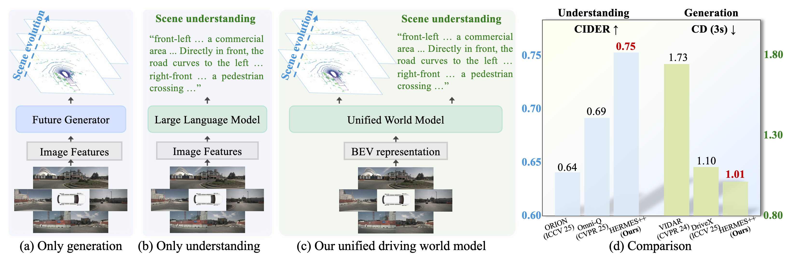
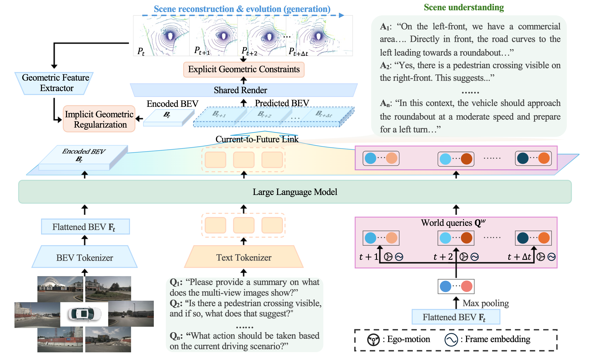
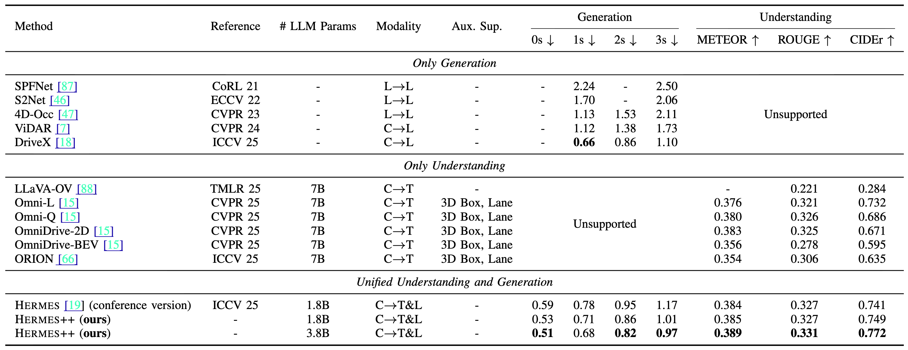
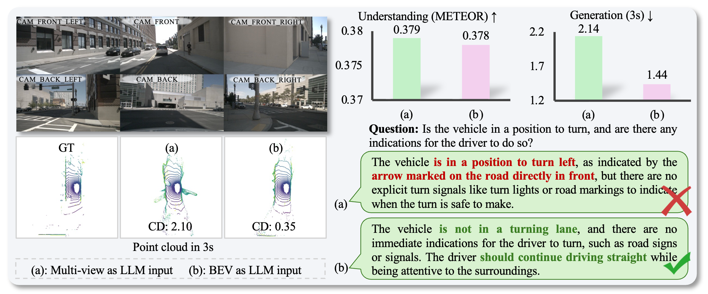
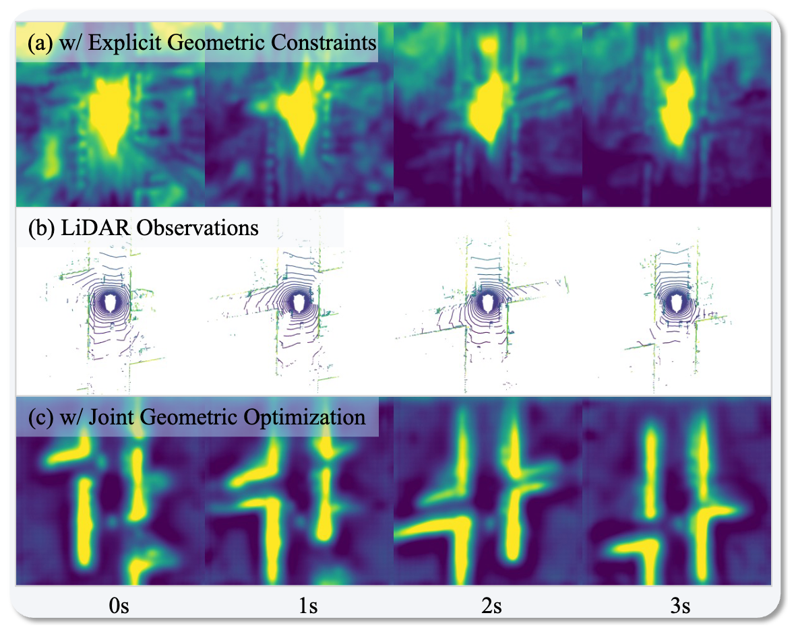
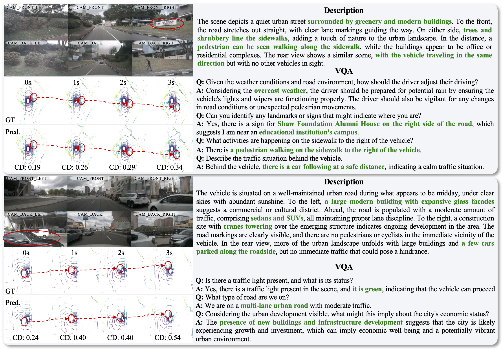

Example 1
Unified Driving World Model
HERMES++: Toward a Unified Driving World Model for 3D Scene Understanding and Generation
Abstract
Driving world models serve as a pivotal technology for autonomous driving by simulating environmental dynamics. However, existing approaches predominantly focus on future scene generation, often overlooking comprehensive 3D scene understanding. Conversely, while Large Language Models (LLMs) demonstrate impressive reasoning capabilities, they lack the capacity to predict future geometric evolution, creating a significant disparity between semantic interpretation and physical simulation. To bridge this gap, we propose HERMES++, a unified driving world model that integrates 3D scene understanding and future geometry prediction within a single framework. Our approach addresses the distinct requirements of these tasks through synergistic designs. First, a BEV representation consolidates multi-view spatial information into a structure compatible with LLMs. Second, we introduce LLM-enhanced world queries to facilitate knowledge transfer from the understanding branch. Third, a Current-to-Future Link is designed to bridge the temporal gap, conditioning geometric evolution on semantic context. Finally, to enforce structural integrity, we employ a Joint Geometric Optimization strategy that integrates explicit geometric constraints with implicit latent regularization to align internal representations with geometry-aware priors. Extensive evaluations on multiple benchmarks validate the effectiveness of our method. HERMES++ achieves strong performance, outperforming specialist approaches in both future point cloud prediction and 3D scene understanding tasks.
Unified Tasks
One model handles both 3D scene understanding and future point cloud generation.
LLM-Enhanced Queries
World queries transfer semantic knowledge from language reasoning into future geometry prediction.
Geometric Optimization
Explicit and implicit geometric constraints keep generated futures structurally consistent.

Pipeline

Demo
Example 2
Main Results

Why BEV as the LLM Input?
Compared with directly feeding multi-view image features into the LLM, the BEV representation preserves spatial structure more effectively. This improves future point cloud generation while maintaining comparable scene understanding quality.

Effect of Joint Geometric Optimization
Joint Geometric Optimization aligns latent features with geometry-aware priors. Compared with using explicit point-cloud constraints alone, the learned representations recover clearer road layouts and future structural patterns that better match LiDAR observations.
This improves the geometry branch without sacrificing the semantic reasoning ability inherited from the LLM.

Qualitative Results

BibTeX
@article{zhou2026hermespp,
title={HERMES++: Toward a Unified Driving World Model for 3D Scene Understanding and Generation},
author={Zhou, Xin and Liang, Dingkang and Chen, Xiwu and Tan, Feiyang and Zhang, Dingyuan and Zhao, Hengshuang and Bai, Xiang},
journal={arXiv preprint},
year={2026}
}
@inproceedings{zhou2025hermes,
title={HERMES: A Unified Self-Driving World Model for Simultaneous 3D Scene Understanding and Generation},
author={Zhou, Xin and Liang, Dingkang and Tu, Sifan and Chen, Xiwu and Ding, Yikang and Zhang, Dingyuan and Tan, Feiyang and Zhao, Hengshuang and Bai, Xiang},
booktitle={Proceedings of the IEEE/CVF International Conference on Computer Vision},
year={2025}
}